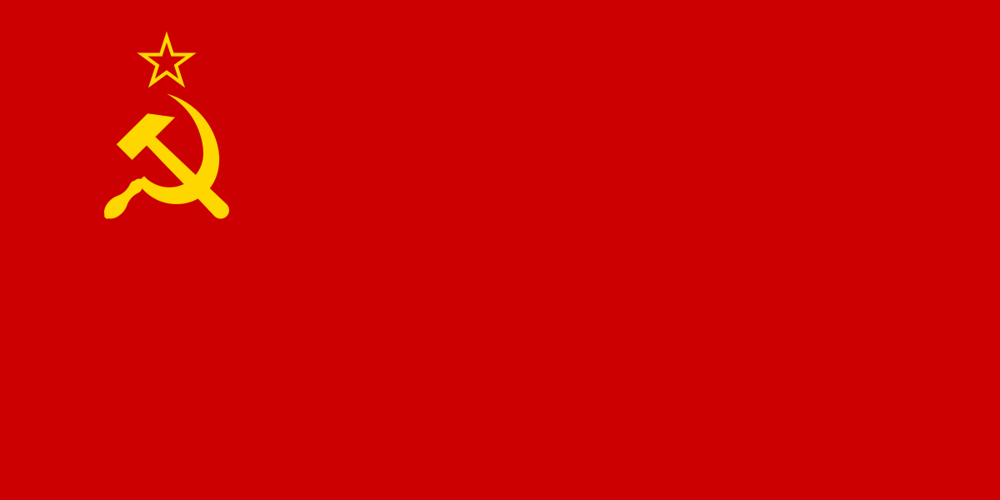

ソビエト
社会主義共和国連邦
(
しゃかいしゅぎきょうわこくれんぽう
)
建国から崩壊まで
年表
最高指導者一覧
国旗の由来
国歌の由来
top
年表
１９１７年１１月
「１０月社会主義革命」
１９１８年夏～２０年
干渉
(
かんしょう
)
戦争
（英、仏、独、伊、米、日など１４カ国）
「戦時共産主義」
１９１９年３月 コミンテルン創立
１９２０年２月 エストニアとの講和条約
１９２０年１１月 資本主義諸国の中で国際的存立をかちとった新しい一時期へ
１９２１年３月 「新経済政策」の開始（割当
徴発
(
ちょうはつ
)
から「穀物税」への移行）
１９２１年１０月 「新経済政策」の展開（市場経済の正面からの
承認
(
しょうにん
)
）
１９２２年４月 イタリア・ジェノバでの国際経済会議に参加
１９２２年４月 ドイツとの国交確立
（ラパッロ条約）
１９２２年１２月 ソ
連邦
(
れんぽう
)
結成
１９２４年１月 レーニン死去
１９２９年～３０年 スターリン、上からの強制的・全面的な農業集団化を強行
１９３５年～３８年 大量
弾圧
(
だんあつ
)
の開始
１９３９年８月 ヒトラー・ドイツと
不可侵
(
ふかしん
)
条約（勢力
範囲
(
はんい
)
を決めた秘密議定書）
１９３９年９月 ドイツがポーランド
侵略
(
しんりゃく
)
、第二次世界大戦の開始
ソ連、ポーランドの東半分を
占領
(
せんりょう
)
１９４０年７月 バルト３国の
併合
(
へいごう
)
１９４１年６月
ドイツがソ連
侵略
(
しんりゃく
)
開始
１９４３年６月 コミンテルンが解散
１９４５年５月 ドイツが無条件
降伏
(
こうふく
)
１９４５年８月 ソ連、対日参戦、千島列島と
歯舞
(
はぼまい
)
・
色丹
(
しこたん
)
の
占領
(
せんりょう
)
（～９月）
１９４５年～５６年 国際法
違反
(
いはん
)
のシベリア長期
抑留
(
よくりゅう
)
１９４７年９月 コミンフォルム結成、
干渉
(
かんしょう
)
主義の道具に（５６年４月、解散）
１９５０年１月 コミンフォルム、日本共産党への
干渉
(
かんしょう
)
１９５１年８月 コミンフォルム、日本共産党への
干渉
(
かんしょう
)
（第２次）
１９５３年３月 スターリン死去
１９５６年２月 ソ連共産党第２０回大会、フルシチョフが「スターリン批判」
１９６４年４月 日本共産党への公然たる
干渉
(
かんしょう
)
攻撃
(
こうげき
)
開始
１９６８年８月 チェコスロバキア
侵略
(
しんりゃく
)
１９７９年１２月 アフガニスタン
侵略
(
しんりゃく
)
１９８４年１２月
核兵器
(
かくへいき
)
全面禁止・
廃絶
(
はいぜつ
)
の
「日ソ両党共同声明」
１９８５年３月 ゴルバチョフ書記長選出、「新しい思考」（８７年）と
干渉
(
かんしょう
)
主義
１９８９年
東欧
(
とうおう
)
の旧体制が
崩壊
(
ほうかい
)
１９９１年８月 ソ連共産党が解散
１９９１年１２月 ソ
連邦
(
れんぽう
)
が解体